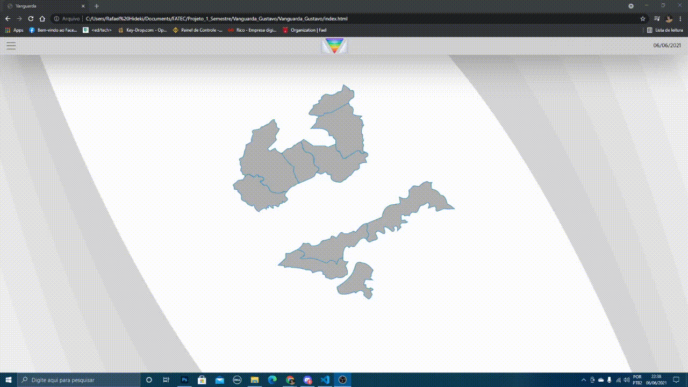
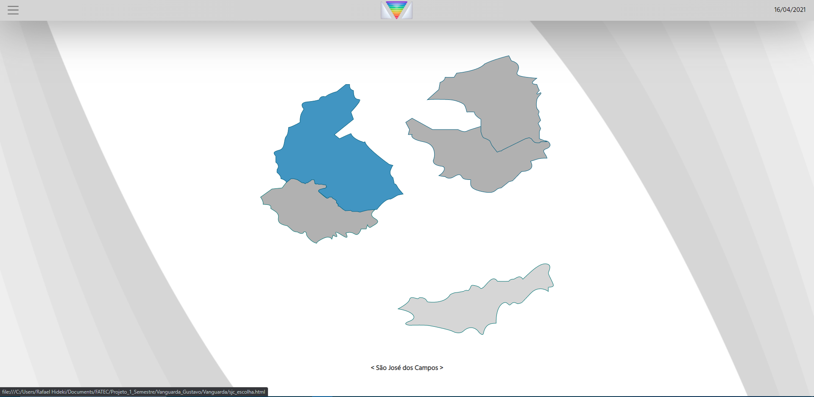
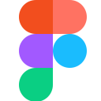

2021.1
Rede Vanguarda
Parceiro Rede Vanguarda
Descrição
Projeto desenvolvido na FATEC em parceria com a Rede Vanguarda. A equipe criou uma plataforma para ajudar jornalistas a consultar e analisar dados eleitorais das regiões atendidas pela emissora. A interface reunia essas informações em um mapa interativo e em um painel de navegação, facilitando a exploração dos dados durante a produção de conteúdo jornalístico.


 HTML5
HTML5 CSS3
CSS3 JavaScript
JavaScript Python
Python Pandas
Pandas Plotly
Plotly Jupyter Notebook
Jupyter Notebook
Figma
Minhas contribuições
Atuei no frontend e participei da criação dos protótipos no Figma e das conversas com o cliente para entender os requisitos. Implementei a navegação entre telas a partir dos cliques no mapa interativo e contribuí para a barra lateral usada como painel de controle. Também trabalhei na integração da interface com o backend.
Habilidades técnicas desenvolvidas
Usei HTML e CSS para estruturar a interface e JavaScript para tratar eventos de clique, manipular o DOM e atualizar o conteúdo exibido. O projeto também me deu experiência prática com prototipação no Figma e com a organização de uma aplicação web integrada ao backend.
Soft skills
Por ser meu primeiro projeto prático de desenvolvimento, aprendi a pedir ajuda a colegas mais experientes e a comunicar dificuldades com clareza. A interação com o cliente e o trabalho em equipe também me ajudaram a tomar iniciativa e a compreender melhor como transformar requisitos em funcionalidades.